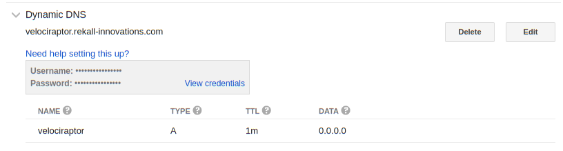

Configuring Velociraptor for SSL
We have previously seen how to deploy a new Velociraptor server. For a simple deployment we can have Velociraptor server and clients provisioned in minutes.
Usually we deploy a specific Velociraptor deployment on our DFIR engagements. We use cloud resources to provision the server and have the clients connect to this cloud VM. A proper secure deployment of Velociraptor will use SSL for securing both client communication and protecting the web GUI.
In the past provisioning an SSL enabled web application was complex and expensive - you had to create certificate signing requests, interact with a CA. Pay for the certificates, then configure the server. In particular you had to remember to renew the cert in 2 years or your website suddenly broke!
Those days are over with the emergence of Lets Encrypt! and autocert. These days applications can automatically provision their own certificates. Velociraptor can manage its own certificates, fully automatically - and then renew its certificates when the time comes with no user intervention required.
In this blog post we will see how to configure a new Velociraptor server in a cloud VM.
Setting up a domain
The first step in deploying an SSL enabled web application is to have a domain name. SSL verifies the authenticity of a web site by its DNS name.
We go over to Google Domains and buy a domain. In this post I will be using the domain rekall-innovations.com.
Provisioning a Virtual Machine
Next we provision an Ubuntu VM from any cloud provider. Depending on your deployment size your VM should be large enough. An 8 or 16Gb VM should be sufficient for around 5-10k clients. Additionally we will need sufficient disk space to hold the data we will collect. We recommend to start with a modest amount of storage and then either backup data as it gets collected or increase the storage volumne as needed.
Our virtual machine will receive connections over ports 80 and 443.
Note
When using SSL both the client communication and the GUI are served over the same ports to benefit from SSL transport encryption.
When we deploy our Virtual Machine we may choose either a static IP addree or allow the cloud provider to assign a dynamic IP address. We typically choose a dynamic IP address and so we need to configure Dynamic DNS.
Go to the Google Domains dashboard and create a new dynamic DNS for your domain. In our example we will use velociraptor.rekall-innovations.com as our endpoint address.

After the dynamic address is created, we can get the credentials for updating the IP address.
Next we install ddclient on our VM. This will update our dynamic IP address whenever the external interface changes. Configure the file /etc/ddclient.conf:
protocol=dyndns2
use=web
server=domains.google.com
ssl=yes
login=X13342342XYZ
password='slk43521kj'
velociraptor.rekall-innovations.com
Next configure the service to start:
# Configuration for ddclient scripts
# generated from debconf on Tue Oct 23 20:25:23 AEST 2018
#
# /etc/default/ddclient
# Set to "true" if ddclient should be run every time DHCP client ('dhclient'
# from package isc-dhcp-client) updates the systems IP address.
run_dhclient="false"
# Set to "true" if ddclient should be run every time a new ppp connection is
# established. This might be useful, if you are using dial-on-demand.
run_ipup="false"
# Set to "true" if ddclient should run in daemon mode
# If this is changed to true, run_ipup and run_dhclient must be set to false.
run_daemon="true"
# Set the time interval between the updates of the dynamic DNS name in seconds.
# This option only takes effect if the ddclient runs in daemon mode.
daemon_interval="300"
Run dhclient and check that it updates the address correctly.
Configuring Velociraptor for SSL
Now comes the hard part! We need to configure Velociraptor to use SSL. Edit the following in your server.config.yaml file (if you do not have one yet you can generate one using velociraptor config generate > server.config.yaml:
Client:
server_urls:
- https://velociraptor.rekall-innovations.com/
autocert_domain: velociraptor.rekall-innovations.com
autocert_cert_cache: /etc/velociraptor_cache/
The autocert_domain parameter tells Velociraptor to provision its own cert for this domain automatically. The certificates will be stored in the directory specified by autocert_cert_cache. You dont have to worry about rotating the certs, Velociraptor will automatically renew them.
Obviously now the clients need to connect to the control channel over SSL so we also need to direct the client’s server_urls parameter to the SSL port.
If all goes well we now can point our browser to https://velociraptor.rekall-innovations.com/ and it should just work. Don’t forget to provision a user and password using:
$ velociraptor --config server.config.yaml user add mic
Notes
The autocert configuration is very easy to do but there are a few caveats:
- Both ports 80 and 443 must be accessible over the web. This is needed because Letsencrypt’s servers need to connect to our domain name in order to verify our domain ownership.
- It is not possible to change the ports from port 80 and 443 due to limitations in Letsencrypt’s ACME protocol. This is why we can not have more than one Velociraptor deployment on the same IP currently.
We have seen how easy it is to deploy secure Velociraptor servers. In the next post we will discuss how to enhance security further by deploying two factor authentication with Google’s Single Sign On (SSO).
Note
This feature will be available in the upcoming 0.27 release. You can try it now by building from git head.